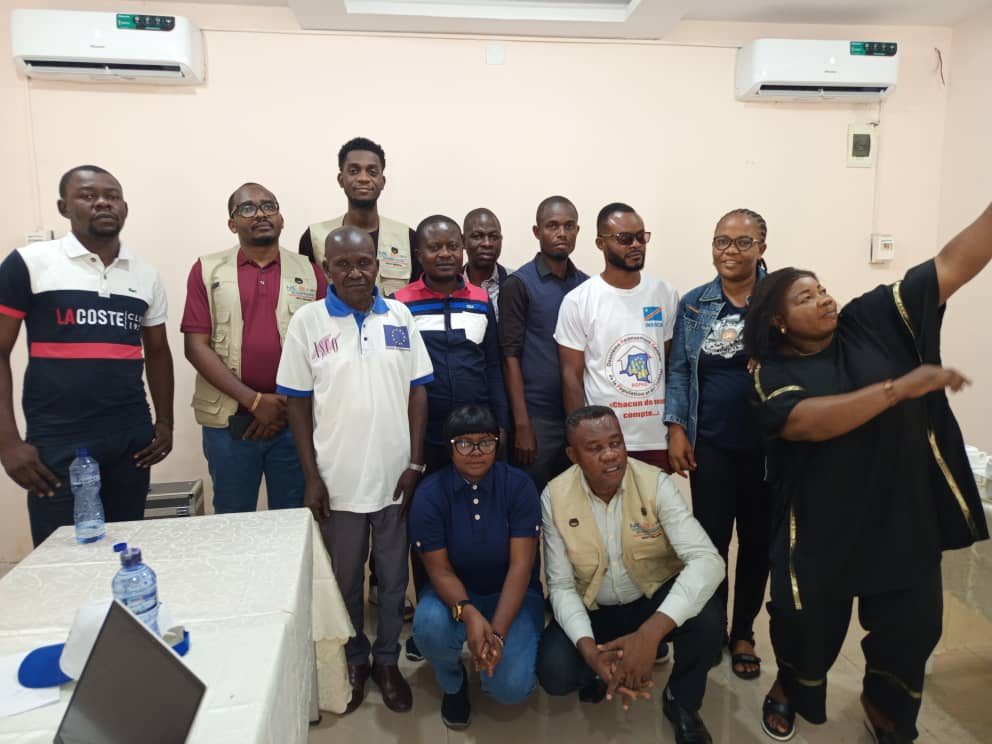

<!DOCTYPE html>
<html lang="fr">

	<head>
		<title>Nabii Academy Consulting : Éducation nutritionnelle : améliorer les pratiques alimentaires dès le jeune âgetitle>
		<meta name="description" content="Les résultats de l’étude soulignent l’importance de renforcer l’éducation nutritionnelle, notamment durant les 1 000 premiers jours de vie. Une meilleure compréhension de l’allaitement, de la diversification alimentaire et des besoins nutritionnels des enfants permet de prévenir efficacement le retard de croissance.">
		{% include 'includes/home/head-home.html' %}
	</head>

	<body>
		<!-- Page Preloder -->
		<div id="preloder">
			<div class="loader"></div>
		</div>

		<!-- header section -->
		<header class="header-section">
			{% include 'includes/home/header-home.html' %}
		</header>
		<!-- header section end-->


		<!-- Header section  -->
		<nav class="nav-section">
			{% include 'includes/home/nav-home.html' %}
		</nav>
		<!-- Header section end -->


		<!-- Breadcrumb section -->
		<div class="site-breadcrumb">
			<div class="container">
				<a href="/"><i class="fa fa-home"></i> Acceuil</a> <i class="fa fa-angle-right"></i>
				<a href="/blog"> Blog</a> <i class="fa fa-angle-right"></i>
				<span>Éducation nutritionnelle</span>
			</div>
		</div>
		<!-- Breadcrumb section end -->


		<!-- Blog page section  -->
		<section class="blog-page-section spad pt-0">
			<div class="container">
				<div class="row">
					<div class="col-md-8">
						<div class="post-item post-details">
							
							<div class="post-content">
								<h3><a href="#">Nabii Academy Consulting : Éducation nutritionnelle : améliorer les pratiques alimentaires dès le jeune âge</a></h3>
								<div class="post-meta">
									<span><i class="fa fa-calendar-o"></i> 20 Juillet 2026</span>
									<span><i class="fa fa-user"></i> Nabii Academy Consulting</span>
								</div>
								<p>
									L’éducation nutritionnelle joue un rôle crucial dans la promotion de pratiques alimentaires saines et dans la prévention du retard de croissance chez les enfants. En sensibilisant les parents et les soignants aux bonnes pratiques nutritionnelles, NAC contribue à améliorer l’état de santé des enfants et à réduire les inégalités en matière de nutrition.
								</p>

								<p>
									Les résultats de l’étude soulignent l’importance de renforcer l’éducation nutritionnelle, notamment durant les 1 000 premiers jours de vie. Une meilleure compréhension de l’allaitement, de la diversification alimentaire et des besoins nutritionnels des enfants permet de prévenir efficacement le retard de croissance.
								</p>

								<blockquote>
									“L’éducation nutritionnelle est un levier essentiel pour améliorer la santé des enfants et prévenir le retard de croissance.”
								</blockquote>

								<p>
									La sensibilisation des parents et des soignants aux bonnes pratiques nutritionnelles est essentielle pour garantir un développement optimal des enfants. En fournissant des informations précises et adaptées, NAC contribue à une meilleure prise en charge nutritionnelle dès les premiers mois de la vie.
								</p>

								<p>
									En outre, l’étude met en lumière l’importance de la collaboration avec les relais communautaires, qui jouent un rôle clé dans la diffusion des messages et le suivi des pratiques au sein des ménages. En renforçant les capacités de ces acteurs de terrain, NAC contribue à créer un environnement favorable à l’adoption de comportements nutritionnels positifs, tout en favorisant une dynamique de changement au sein des communautés.
								</p>

								<p>
									À travers une approche méthodologique rigoureuse, centrée sur les réalités communautaires, NAC a su analyser les dynamiques sociales, économiques et culturelles qui influencent les pratiques nutritionnelles. L’étude met en lumière des facteurs déterminants tels que les pratiques alimentaires inadéquates, la fréquence des maladies infantiles, l’accès limité aux services de santé, ainsi que les contraintes structurelles liées à la pauvreté et aux normes sociales.
								</p>

								<div class="tag"><i class="fa fa-tag"></i> NUTRITION, ANALYSE, POLITIQUES PUBLIQUES</div>
							</div>
							<div class="post-author">
								<div class="pa-thumb set-bg" data-setbg="../../static/home/img/blog/author.png"></div>
								<div class="pa-content">
									<h4>Nabii Academy Consulting : Education Nutritionnelle</h4>
									<p>
										L’étude qualitative menée par NAC dans les provinces du Kwango et du Kongo Central s’inscrit dans le cadre de la Déclaration présidentielle contre la malnutrition, qui vise à renforcer les efforts nationaux pour améliorer la nutrition des enfants. En fournissant des données essentielles sur les déterminants de la malnutrition et en proposant des recommandations concrètes, cette étude contribue à orienter les politiques publiques et à renforcer l’efficacité des interventions nutritionnelles au niveau local.
									</p>

									<p>
										En collaborant étroitement avec les acteurs institutionnels, les relais communautaires et les bénéficiaires, NAC s’assure que les résultats de l’étude sont pertinents et adaptés aux réalités du terrain, tout en favorisant une appropriation locale des recommandations pour un impact durable.
									</p>
								</div>
							</div>
							<div class="comment-warp">
								<h4 class="comment-title">3 Commentaires</h4>
								<ul class="comment-list">
									<li>
										<div class="comment">
											<div class="comment-avator set-bg" data-setbg="../../static/home/img/blog/comment/111.png"></div>
											<div class="comment-content">
												<span class="c-date">Juillet 2025</span>
												<h5>Acteur institutionnel – Secteur Santé</h5>
												<p>
													Les résultats de l’étude confirment l’importance de renforcer les systèmes de santé de proximité pour garantir un accès équitable aux services de santé et à l’éducation nutritionnelle, en particulier dans les zones rurales et isolées.
												</p>
												<a href="" class="c-btn"><span><i class="fa fa-heart"></i></span></a>
												<a href="" class="c-btn"><span><i class="fa fa-envelope"></i></span></a>
											</div>
										</div>

										<ul class="replay-comment-list">
											<li>
												<div class="comment">
													<div class="comment-avator set-bg" data-setbg="../../static/home/img/blog/comment/22.png"></div>
													<div class="comment-content">
														<span class="c-date">Juillet 2025</span>
														<h5>Relais communautaire</h5>
														<p>
															En tant que relais communautaire, je constate que les messages de sensibilisation sur la nutrition ont un impact positif sur les pratiques alimentaires des familles, mais il est crucial de continuer à renforcer nos capacités pour mieux accompagner les communautés.
														</p>
														<a href="" class="c-btn"><span><i class="fa fa-heart"></i></span></a>
														<a href="" class="c-btn"><span><i class="fa fa-envelope"></i></span></a>
													</div>
												</div>
											</li>
										</ul>
									</li>

									<li>
										<div class="comment">
											<div class="comment-avator set-bg" data-setbg="../../static/home/img/blog/comment/33.png"></div>
											<div class="comment-content">
												<span class="c-date">Juillet 2025</span>
												<h5>Expert en nutrition et politiques publiques</h5>
												<p>
													Cette étude met en lumière des enjeux cruciaux pour la nutrition infantile, notamment l’importance de l’éducation nutritionnelle et de la collaboration multisectorielle pour améliorer les pratiques alimentaires et prévenir
												</p>
												<a href="" class="c-btn"><span><i class="fa fa-heart"></i></span></a>
												<a href="" class="c-btn"><span><i class="fa fa-envelope"></i></span></a>
											</div>
										</div>
									</li>
								</ul>
								<div class="comment-form-warp">
									{% include 'includes/home/form-blog.html' %}
								</div>
							</div>
						</div>
					</div>
					<!-- sidebar -->
					<div class="col-sm-8 col-md-5 col-lg-4 col-xl-3 offset-xl-1 offset-0 pl-xl-0 sidebar">
						{% include 'includes/home/side-bare-home.html' %}
					</div>
				</div>
			</div>
		</section>
		<!-- Blog page section end -->


		<!-- Newsletter section -->
		<section class="newsletter-section">
			{% include 'includes/home/newsletter-home.html' %}
		</section>
		<!-- Newsletter section end -->	


		<!-- Footer section -->
		<footer class="footer-section bg-dark text-white py-3">
			{% include 'includes/home/footer-home.html' %}
		</footer>
		<!-- Footer section end-->


		<!--====== Javascripts & Jquery ======-->
		{% include 'includes/home/scripts-home.html' %}
		
	</body>

</html>